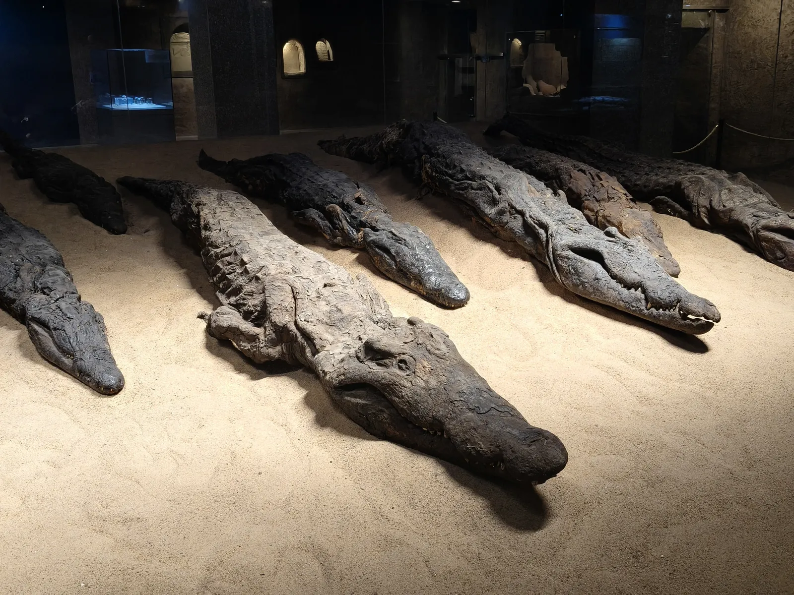

Jour 6 · Escale 1
Kom Ombo — Temple du Crocodile
Le temple de Kom Ombo est unique en Égypte : il est dédié à deux divinités simultanément — Sobek (le dieu crocodile) d'un côté, Horus le Faucon de l'autre. Son architecture est parfaitement symétrique, avec deux axes rituels parallèles. Le musée attenant présente des dizaines de crocodiles momifiés, parés de bijoux et enterrés avec honneurs. À 44°C sous le soleil de l'après-midi en avril — impressionnant malgré la chaleur écrasante.